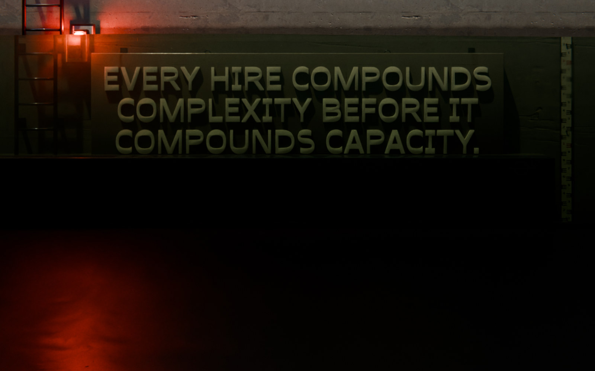

Scaling Up‑Side‑Down
The book
SUSD Bootloader
Get it free
How many people are on your team?
39people
741coordination pathways
- Team of Teams 40+
- Graveyard 15–39
- The Graveyard is not a temporary problem. It's a structural trap.
- Threshold 13–14
- Team 8–12
- Valley 4–7
- Small Team 2–3
- Solopreneur 1
Complexity > Capacity = Redline.
The business is drowning. Every addition makes it worse.